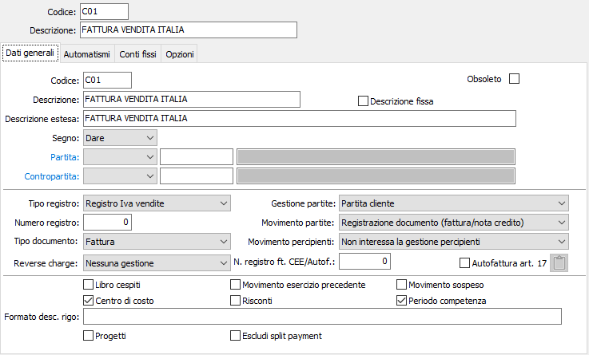
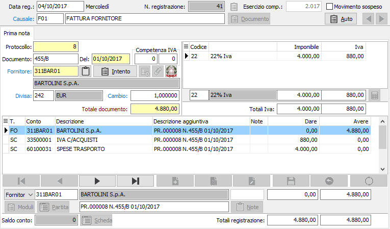
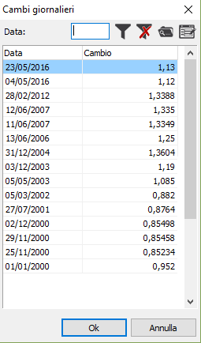
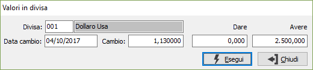
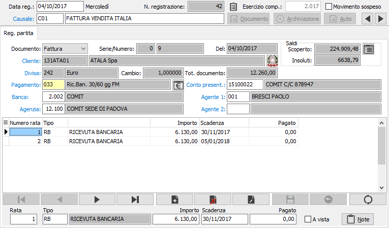
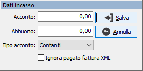

Il pulsante Analisi
consente di accedere all'analisi dell'estratto conto del cliente indicato
dalla partita.
Il pulsante Analisi
consente di accedere all'analisi dell'estratto conto del cliente indicato
dalla partita.Registrazione di fatture generiche
Per registrare una fattura di vendita o di acquisto, occorre utilizzare causali analoghe alle due illustrate di seguito. Nelle immagini sono illustrate causali relative ai registri Iva della serie sezionale 0 (zero), che attivano le partite aperte. Gli utenti che non intendono utilizzare le partite aperte, indicheranno nell'apposito campo il valore non interessa la gestione partite.

Se non vengono gestite le partite aperte, la registrazione prevede la finestra video Prima nota (Iva + contabilità); in caso contrario, è prevista anche la finestra video Registrazione partita.
Finestra video Prima Nota sezione Iva

REGISTRAZIONE IVA: viene proposto il primo numero di protocollo (numero fattura vendita o protocollo fatture acquisto) libero per l'anno fiscale in cui ricade la data di registrazione, della serie di registro Iva sezionale indicata nella causale contabile. Per quanto sia possibile modificare, sotto la responsabilità dell'utente, l'ordine di registrazione dei documenti, si consiglia vivamente di registrare fatture di acquisto o vendita in ordine di ricevimento o di emissione, al fine di evitare eventuali incongruenze nell'ordine di stampa sui registri Iva a causa di una non corretto inserimento dei numeri di fattura o protocollo. Sono previsti controlli logici: tentando di registrare una fattura con una data di registrazione inferiore a quella di una precedente registrazione di fattura, appare la segnalazione incoerenza fra numero e data di registrazione e viene impedita la registrazione se non cambiando la data di registrazione stessa.
NUMERO DOCUMENTO: In caso di fattura di vendita viene proposto un numero uguale al numero di protocollo; in caso di fattura di acquisto, viene richiesto l'inserimento del numero rilevato dalla fattura del fornitore. Non sono accettati due numeri di fattura identici per lo stesso fornitore.
DATA DOCUMENTO: In caso di fattura di vendita viene proposta una data, modificabile, uguale alla data di registrazione. In caso di fattura di acquisto occorre invece inserire la data della fattura del fornitore. Sono previsti controlli logici: se viene inserita una data di fattura di acquisto inferiore di 4 mesi, 2 mesi per le fatture CEE, alla data di registrazione, appare la segnalazione Attenzione: data inferiore al termine massimo di registrazione. La segnalazione non è bloccante: l'utente può registrare la fattura utilizzando una aliquota Iva non deducibile (e portare poi in detrazione l'Iva in sede di dichiarazione annuale) oppure registrare ugualmente il documento con Iva detraibile.
ANNO DI COMPETENZA: a conferma della data del documento, viene visualizzato l'anno di competenza Iva corrispondente all'anno di registrazione. Il campo risulta invece vuoto nel caso in cui si sia utilizzata una causale contabile che prevede il differimento dell'Iva.
MESE DI COMPETENZA: contestualmente all'anno, viene visualizzato anche il mese di competenza Iva corrispondente al mese di registrazione. Il campo risulta invece vuoto nel caso in cui si sia utilizzata una causale contabile che prevede il differimento dell'Iva.
CLIENTE/FORNITORE: Deve essere inserito, a seconda dei casi, un codice cliente o un codice fornitore facenti parte di un conto clienti o di un conto fornitori e presenti nella rispettiva tabella anagrafica. Sul campo sono attive le funzioni di ricerca (F9) e manutenzione (CTRL+W) sulla tabella stessa. A conferma viene visualizzata la ragione sociale del cliente o del fornitore. Se sono presenti note sul cliente viene visualizzato in blu il bottone note e cliccando su tale bottone viene visualizzato il contenuto di tali note. Il bottone , nel caso il cliente abbia associato delle lettere di intento, effettuare la gestione per il collegamento al movimento che si sta registrando. Se presente il modulo BoxFatture passivo, utilizzato tramite l'applicazione OS1BoxFatture acquisti, sarà presente il pulsante ed in fase di inserimento sarà possibile l'acquisizione delle fatture di acquisto. Se presente il modulo BoxFatture attivo, utilizzato tramite l'applicazione OS1BoxFatture vendite, sarà presente il pulsante ed in fase di inserimento sarà possibile l'acquisizione delle fatture di vendita.
DIVISA: avendo inserito il codice di un cliente o di un fornitore. su questo campo viene presentato il codice della divisa memorizzata nell'anagrafica e abitualmente utilizzata dal cliente o dal fornitore. L'utente ha tuttavia la possibilità di modificare la divisa nel caso in cui la fattura corrente sia espressa in una divisa estera diversa da quella abituale del cliente o del fornitore. Sul campo sono attive le funzioni di ricerca (F9) e manutenzione (CTRL+W) sulla tabella stessa.

CAMBIO: se presente nella tabella Cambi giornalieri, viene visualizzato il cambio del giorno per la divisa indicata contro Euro. Se invece nella tabella Cambi giornalieri non fosse presente un cambio riferito alla data del documento, viene visualizzato il cambio con data più prossima a quella del documento, e contestualmente viene visualizzato un messaggio di avviso. Proseguendo il cursore si posiziona sul campo cambio per consentire l'eventuale modifica del cambio stesso. Sul campo è comunque attiva la funzione di ricerca F9 che determina l'apertura di una finestra video in cui vengono presentati tutti gli ultimi cambi, con relativa data di riferimento, presenti nella tabella Cambi giornalieri per la divisa attiva.TOTALE DOCUMENTO: inserire il totale del documento, espresso nella divisa di cui ai campi precedenti. L'informazione in questo campo può essere inserito l'importo totale del documento. Se l'importo totale del documento viene inserito, si rende possibile il successivo controllo automatico di quadratura: non appena la somma degli imponibili e degli importi Iva inseriti nei campi successivi raggiunge l'importo qui inserito, il programma torna automaticamente alla sezione contabilità. Viceversa, se in questo campo non viene inserito nessun valore, il passaggio alla fase successiva dovrà essere comandato manualmente dall'operatore al termine dell'inserimento di imponibili e importi Iva.
CODICE IVA: inserire un codice Iva presente in tabella Descrizioni aliquote Iva e coerente con l'aliquota o il titolo di esenzione/non imponibilità previsto nella fattura. Sul campo sono attive le funzioni di ricerca (F9) e manutenzione (CTRL+W) sulla tabella stessa. Tramite il tasto funzione F11 è possibile visualizzare le Note sul codice Iva stesso se precedentemente inserite.
IMPONIBILE: campo destinato a contenere l'imponibile in divisa del documento relativo al codice Iva del campo precedente. L'operatore su questo campo può operare in modo diversificato in funzione dell'obiettivo che vuole ottenere:
può impostare l'imponibile in divisa e confermarlo. Il programma effettua il calcolo automatico dell'Iva corrispondente, se previsto; se il totale documento non è stato ancora raggiunto, ritorna al campo imponibile per l'inserimento di un secondo imponibile, altrimenti passa alla sezione video contabilità se il totale fattura è stato raggiunto;
può impostare l'imponibile e premere F12 anzichè confermarlo. In questo caso, il programma calcola l'Iva e la visualizza nel campo successivo, ma vi si ferma per effettuare eventuali variazioni; la funzione è utile specialmente in caso di registrazione di una fattura di acquisto fatta a mano, quando l'Iva in fattura può non essere esatta.
può impostare il totale fattura e premere F11 anzichè confermarlo. In questo caso, il programma effettua lo scorporo automatico dell'Iva (se il codice Iva indicato prevede una aliquota significativa), determina l'imponibile inserendolo in questo campo, determina l'Iva inserendola nel campo successivo; se il totale documento non è stato ancora raggiunto, ritorna al campo imponibile per l'inserimento di un secondo imponibile, altrimenti passa alla sezione video contabilità se il totale fattura è stato raggiunto;
IVA: Questo campo contiene l'importo Iva relativo all'imponibile del campo precedente, ma il cursore vi si ferma solo, consentendo l'eventuale modifica, se sull'imponibile è stato premuto il tasto F12.
Se è stato inserito il totale del documento, il programma passa automaticamente alla sezione contabilità non appena la somma degli imponibili e dell'Iva inseriti nel castelletto Iva corrisponde al totale fattura.
Nel caso in cui invece non sia stato inserito il totale del documento nell'apposito campo, il programma non è in grado di determinare da solo se tutti i righi Iva sono stati inseriti. E quindi l'operatore che, al termine dell'inserimento dei righi Iva, deve darne comunicazione al sistema premendo pagina giù.
È possibile inserire imponibili negativi facendo precedere all'imponibile il segno -. Ciò è particolarmente utile per registrare eventuali arrotondamenti negativi spesso presenti su fatture Telecom, Omnitel, Enel, Aem, ecc.
Benché la sezione video sembri poter contenere fino a 3 aliquote Iva per una fattura, è possibile registrare fatture con un numero superiore di aliquote perché, completate le righe disponibili della griglia, le prime righe scorrono in su. È possibile spostarsi fra le righe già inserite per eventuali variazioni.
In questa versione non è consentito inserire un nuovo rigo prima del rigo corrente; per cancellare un rigo il tasto funzione è CTRL+CANC.
È possibile effettuare registrazioni di sola Iva, talvolta necessarie per registrare note di debito emesse a fronte di precedenti fatture in cui era stata applicata un'aliquota Iva errata: in questi casi, dopo aver inserito il codice Iva, inserire il valore 0 nel campo imponibile e confermarlo con F12; il cursore si posiziona sul campo Iva dove è possibile inserire l'importo. Tuttavia questa modalità operativa è assolutamente deprecabile, perché determinerebbe incongruenze nei dati per la dichiarazione annuale Iva. Infatti la precedente fattura era stata probabilmente registrata con un codice Iva relativo ad una diversa aliquota, mentre la sola eccedenza Iva della nota di debito verrebbe registrata al codice Iva esatto, ma priva di imponibile. È preferibile registrare con segno negativo e con il precedente codice Iva l'imponibile e l'Iva della fattura originaria, e subito dopo, in positivo, lo stesso imponibile e la relativa Iva esatta con il codice Iva esatto: in questo modo, il totale della fattura corrisponde esattamente all'importo della nota debito, e i dati per la dichiarazione annuale Iva sono esatti.
Finestra video Prima Nota sezione Contabilità
La parte inferiore della finestra video delle registrazioni inerenti fatture di acquisto o vendita ha un aspetto già noto perché ripropone le modalità di lavoro della contabilità illustrate nel paragrafo precedente.
Avendo completato la sezione Iva, l'articolo contabile derivante dalle informazioni inserite si presenta completamente compilato se nell'anagrafica cliente o fornitore è presente il codice del sottoconto di costo o di ricavo abituale; si presenta invece privo del sottoconto di costo o di ricavo (ma già completo di importo) nel caso contrario. In quest'ultimo caso, inserendo il codice del sottoconto di costo o di ricavo si completa quindi la registrazione contabile, che può essere confermata, se non necessitano ulteriori verifiche nella sezione video registrazione partita, cliccando sul pulsante Salva della tool bar o utilizzando il tasto funzione F10. Se i dati Iva erano stati inseriti in divisa diversa da quella di gestione, al momento di inserire l'importo viene presentata una finestra in cui viene visualizzata la divisa originale ed è possibile inserire l'importo, in dare o avere, nella divisa originale; sul movimento viene riportato nella divisa di gestione.

Nel caso in cui fosse stata utilizzata una aliquota Iva totalmente indetraibile, viene omessa la presentazione della riga del conto Iva acquisti o Iva vendite e l'importo dell'Iva indetraibile viene aggiunto all'importo del costo o del ricavo. Analogamente, avendo utilizzato una aliquota Iva parzialmente indeducibile viene presentato il rigo del conto Iva vendite o Iva acquisti a cui viene imputato l'importo della sola parte di Iva detraibile. L'eccedenza, indeducibile, viene sommata all'importo del costo o del ricavo.E possibile che il documento si riferisca a più di un costo o ricavo. In questo caso, occorre cancellare l'importo proposto dal programma e sostituirlo con quello, precedentemente calcolato, relativo al primo conto di costo o di ricavo. E poi necessario inserire gli ulteriori righi di costo o di ricavo ed i relativi importi fino ad ottenere la quadratura dell'articolo contabile.
Per ulteriori informazioni in merito alla sezione contabilità, si veda al paragrafo Registrazioni di Contabilità generale.
Finestra video Registrazione Partita
La linguetta registrazione partita può essere visualizzata solo se la causale contabile utilizzata ne prevede la gestione. I dati contenuti nella sezione video, necessari per la creazione delle varie scadenze relative alla fattura registrata, vengono automaticamente calcolati utilizzando per default le informazioni presenti nell'anagrafica del cliente o del fornitore intestatario della fattura registrata.
Se lo ritiene opportuno, al termine della sezione contabilità della registrazione, l'utente può tuttavia visualizzare la sezione registrazione partita cliccando sul pulsante Partite, allo scopo di accertarsi che le condizioni di pagamento previste dalla fattura corrispondano a quelle presenti in anagrafica del cliente o del fornitore ed apportare, se del caso, le necessarie variazioni. Tramite la configurazione partite aperte è possibile indicare alla procedura di prima nota di visualizzare sempre la pagina delle partite dove prevista.
Se l'anagrafica del cliente o del fornitore fosse priva delle condizioni di pagamento, questa sezione video si attiva automaticamente dopo la sezione relativa all'Iva, per l'evidente necessità di inserimento dei parametri che non possono essere desunti dall'anagrafica. Infatti, la registrazione contabile eseguita non può essere salvata in assenza delle relative scadenze congrue.

DOCUMENTO; SERIE REGISTRO; NUMERO DOCUMENTO; DATA DOCUMENTO: queste informazioni, desunte automaticamente dalla registrazione Iva, vengono visualizzate senza possibilità di variazione.
CODICE CLIENTE/FORNITORE, DIVISA, CAMBIO, TOTALE FATTURA: queste informazioni, desunte automaticamente dalla registrazione Iva, vengono visualizzate senza possibilità di variazione.
PAGAMENTO: codice alfanumerico del pagamento, presente in tabella Modalità di pagamento, con cui verranno generate le scadenze di pagamento del documento attivo. Viene automaticamente proposto il codice inserito sull'anagrafica cliente/fornitore, se presente, che può essere modificato se la fattura in fase di registrazione ha un pagamento diverso dall'abituale memorizzato in anagrafica. Il campo è obbligatorio, e un pagamento diverso può essere ricercato con F9 o creato interattivamente con CTRL+W. Modificando un codice di pagamento esistente vengono ricalcolate le scadenze.
Se è attiva la gestione della Normativa Antimafia è presente il bottone che permette di accedere ai dati di incasso su cui è presente il campo "Riferimento commessa pubblica" che contiene la commessa pubblica assegnata alla scadenza.
Il pulsante Analisi
consente di accedere all'analisi dell'estratto conto del cliente indicato
dalla partita.

Il pulsante Incasso consente di inserire i dati relativi ad un'eventuale acconto o abbuono; premendo il pulsante si accede alla finestra mostrata a lato dove è possibile inserire i dati necessari. Nel caso di importazione fattura da file XML è presente la casella "Ignora pagato fattura XML" che se spuntata ignora l'importo in contanti presente nel file XML (quando viene spuntata la casella il campo Incasso viene azzerato).
Al momento in cui si preme il tasto Pagina avanti per uscire da questa maschera e proseguire a quella successiva vengono eseguiti una serie di controlli.
Se si sta registrando una nota di credito viene richiesto se si intende associare la nota di credito ad una fattura già registrata in modo da stornare automaticamente il saldo della partita stessa; viene effettuata la richiesta Si desidera assegnare il documento ad una fattura ?; in caso di risposta affermativa viene visualizzato l'elenco delle fatture aperte a cui la nota di credito può essere associata.
BANCA: eventuale codice numerico presente in tabella Banche per indicare l'eventuale banca di appoggio per gli effetti emessi a saldo della fattura di un cliente. Se presente, viene visualizzata la banca esistente in anagrafica cliente. Sul campo sono attive le funzioni di ricerca (F9) e manutenzione (CTRL+W) sulla tabella stessa.
AGENZIA: eventuale codice numerico presente in tabella Agenzie bancarie per indicare l'agenzia dell'eventuale banca di appoggio per gli effetti emessi a saldo della fattura di un cliente. Se presente, viene visualizzata l'agenzia esistente in anagrafica cliente. Sul campo sono attive le funzioni di ricerca (F9) e manutenzione (CTRL+W) sulla tabella stessa.
CONTO DI PRESENTAZIONE: eventuale codice di sottoconto, presente in tabella Conti Correnti, per indicare il conto corrente aziendale a cui verranno presentati per l'incasso gli effetti emessi (in caso di fattura di vendita) o per il pagamento gli effetti passivi (in caso di fattura di acquisto). Il campo conto di presentazione è accessibile solo per tipi pagamento Ricevuta bancaria, Cessione, Tratta. Bonifico, Assegno bancario, Assegno di traenza. Se presente, viene visualizzato il conto corrente esistente nell'anagrafica del cliente o del fornitore attivo. Sul campo sono attive le funzioni di ricerca (F9) e manutenzione (CTRL+W) sulla tabella stessa.
CODICE AGENTE 1: campo visualizzato solo per le partite clienti. Contiene il codice alfanumerico, presente in anagrafica Agenti, dell'eventuale agente cui è affidato il cliente attivo, allo scopo di consentire la gestione delle provvigioni. Se presente, viene visualizzato l'agente esistente nell'anagrafica del cliente attivo. Sul campo sono attive le funzioni di ricerca (F9) e manutenzione (CTRL+W) sulla tabella stessa.
CODICE AGENTE 2: campo visualizzato solo per le partite clienti. Contiene il codice alfanumerico, presente in anagrafica Agenti, dell'eventuale secondo agente cui è affidato il cliente attivo, allo scopo di consentire la gestione delle provvigioni. Se presente, viene visualizzato il secondo agente esistente nell'anagrafica del cliente attivo. Sul campo sono attive le funzioni di ricerca (F9) e manutenzione (CTRL+W) sulla tabella stessa.
RATA: numero progressivo delle rate in cui è suddiviso il pagamento della fattura. Il numero massimo di rate in cui può essere suddiviso il pagamento di una fattura è ottanta. In questa colonna è possibile scorrere fra le varie rate tramite freccia giù e freccia su fino alla rata di cui si desidera modificare importi o scadenza. Su questo campo è possibile confermare il prospetto delle scadenza, eventualmente previa modifica di date e/o importi. Premendo pagina giù le scadenze vengono confermate e il programma passa alla fase successiva
TIPO SCADENZA: il campo presenta, per ciascuna rata, il tipo di modalità di pagamento previsto dalla causale di pagamento per la rata stessa. È possibile modificare il tipo di pagamento di una o più rate.
IMPORTO SCADENZA: il campo presenta, per ciascuna rata, l'importo della rata stessa calcolato secondo i criteri previsti dalla causale di pagamento. E possibile modificare manualmente uno o più importi, purché la somma dei singoli importi corrisponda al totale della fattura
DATA SCADENZA: il campo presenta, per ciascuna rata, la data di scadenza calcolata secondo i criteri previsti dalla causale di pagamento. E possibile modificare manualmente una o più date di scadenza.
CHECK BOX A VISTA: Il campo consente di attivare la scadenza a vista di una ricevuta bancaria, cessione o tratta, indipendentemente dalla data di scadenza visualizzata. Valori ammessi: non selezionato vale la data di scadenza visualizzata per la rata; selezionato una scadenza a vista.